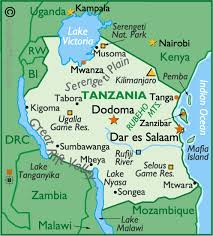

Flag and history

Tanzania is a country located in the east of Africa, Tanzania was formed from two nations, the Island nation of Zinzabar
and the mainland of
Tanganyika.
Tanganyika became free of British colonialism in December of 1961 and 3 years later Zanzibar gained its freedom by a revolution on January 12, 1964. the unity of these two nations earned Tanzania its spot as the 31st largest country in the world.
the flag of Tanzania is green at at top with a yellow, black, and yellow line diagnoly in the middle of it while at the very bottom lays a navy blue. while the bottom is blue.
According to Brittanica, the black section of the flag represents the people who inhabit the country, and the yellow represents mineral wealth which makes annually 2.5 billion dollars, it is also home to Tanzanite a mineral zoisite rated to be 1,000 times rare than Diamonds. The green section displays the abundance in agriculture, A description well earned as it is placed as the 4th highest producer of coffee in Africa and 18th in the world. According to Withams.com, it produces 30-40,00 metric tons of coffee annually.
And the blue signifies the lake, Rivers, and the Indian Ocean. Lake Victoria and Lake Tanganyika are the most revered bodies of water in the country. Both hold places among the top 10 largest freshwater lakes in terms of volume and depth. the lakes also produce an abundance of fish as Lake Tanganyika hosts about 350 different species of fish and annually people collect 165-200 thousand tons of fish, Lake Victoria produces 1 million Tons and is the livelihood of 4 million different people.
